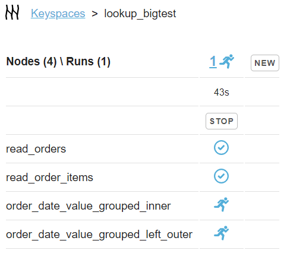

Capillaries blog
2023-02-20
First look at Capillaries UI
Below are two scraped snapshots of Capillaries UI that give the idea about the state of the test environment. Click any of the screenshots and navigate through status screens - all blue elements are clickable, buttons are disabled.
lookup_bigtest is an integration test for Capillaries Deploy tool, it creates test data (~50K orders with ~100K order items) deploys it to an Openstack public cloud and runs Capillaries script that:
- reads orders from 50 files and order items from 100 files in parallel
- performs four types of joins in parallel
- saves sorted results as CSV files (one file - one worker)
lookup_bigtest run in progress:
lookup_bigtest (and all other test runs) complete: